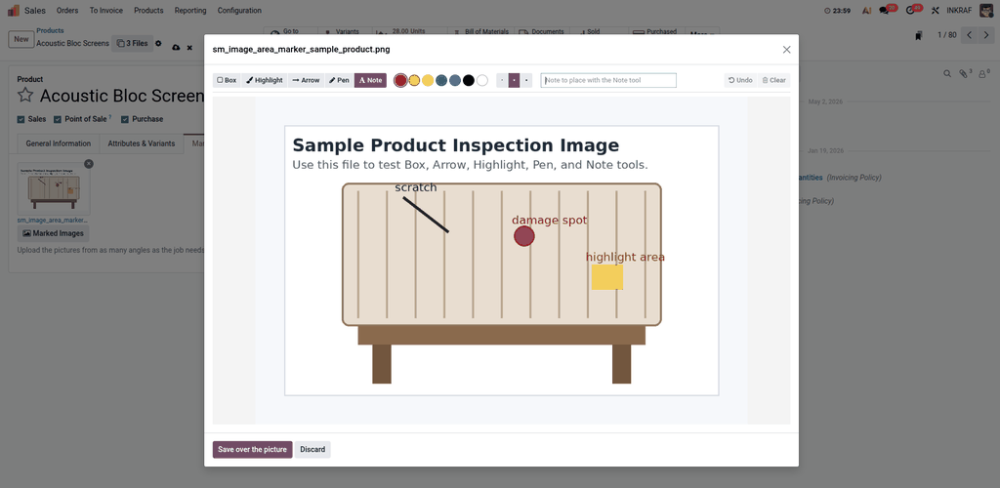

A picture of a dented door reaches the workshop with the dent somewhere in it. Everybody who opens the file afterwards has to be told again, in words, which dent and where. Marking it on the picture ends that conversation.
Ring the area that matters.
Wash a colour over it without hiding it.
Point at the spot from somewhere clearer.
Draw by hand, or write on the picture.
As many pictures as the job needs, from as many angles.
It opens full size in the editor.
Five tools, seven colours, three thicknesses, undo and clear.
The marked picture is written over the original.

The attachment keeps its id, so everything already pointing at that picture goes on pointing at it and now shows the marks: a repair order, a claim, an estimate, a message in the chatter.
Marks are drawn in the coordinates of the picture itself, not of the screen, so a mark put on a corner from a laptop sits on that same corner in the saved file.
The widget is not tied to products. Put image_marker on any many2many of attachments and it works the same way there.
A field shown read only opens the picture to be looked at, with no tools and nothing to save.